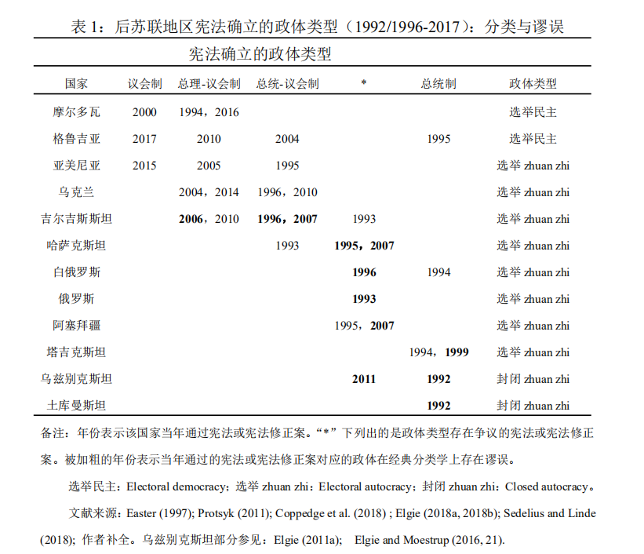

收录于合集

作品简介
【作者】 Petra Stykow，德国慕尼黑大学政治学系政治学教授，1990年在德累斯顿大学取得博士学位，2004年起在慕尼黑大学任教。主要研究方向是中东欧以及欧亚地区的政体比较。
【编译】 伍雨荷（国政学人编译员，北京大学外国语学院本科生）
【校对】 吕紫烟
【审核】 姚寰宇
【排版】 张越涵
【美编 】黄竹音
【来源】 Stykow, Petra. “The devil in the details: constitutional regime types in post-Soviet Eurasia.” Post-Soviet Affairs 35:2(2019): 122-139. Web
期刊简介
Post-Soviet Affairs（《后苏联事务》），成立于1992年，可追溯至1985年成立的Soviet Economy。该期刊致力于研究俄罗斯和前苏联其他共和国的政体、经济、社会和外交关系，重点关注该地区现代化改革进程中产生的张力。根据Journal Citation Reports显示，2019年该杂志影响因子为2.167，在77个区域研究类期刊中排名第4（4/77）。
细节之中见真章：后苏联欧亚地区宪政政体类型
The devil in the details: constitutional regime types in post-Soviet Eurasia
Petra Stykow
内容提要
欧亚地区wei· quan主义（authoritarian）国家的宪法在文本中确立了总统至上原则（presidential supremacy）以及保障该原则贯彻落实的若干宪法工具，因而极大地区别于区域内较民主国家的宪法。因此，经典政体类型学不足以解释前一类国家的权力架构。根据行政- 立法关系，这些国家通常被归为总统制或半总统制（semi-presidential）。这种分类导致目前关于政体（特别是总统- 议会制）影响执政表现和政权稳定的比较研究，在案例选择上存在着缺陷。本文表明，欧亚地区所有国家的宪法之中，有近三分之一折射出了一种区域特有的、事实上的wei quan主义总统制度。本文对这种“欧亚型总统制（Eurasian-type presidentialism）”或“超级总统制（superpresidentialism）”宪政模式的特征进行了系统归纳。在方法论上，本文鼓励通过语境分析“从内部”理解非西方、非自由主义的宪法。
文章导读
01
导论
近年来，比较wei quan主义和比较宪政研究中的两项新发现对传统观点构成了一定的冲击。一方面，过去学界认为wei quan宪法仅起到装点门面的作用，但最近的研究表明，wei quan宪法也会为政体确立事实上的权威模式。另一方面，通常认为相较于民主国家，wei quan国家设立的行政权更强、立法权更弱，这一假设已经遭到了推翻。实证研究表明，zhuan zhi主义宪法和民主主义宪法在行政权的设置上并无差别。由此出发，本文从另一个角度提出了关于zhuan zhi主义宪法内容的问题，对单一政治历史区域——后共产主义欧亚地区的所有宪法进行了归纳性、文本性的比较解读。
本文结构安排如下：首先，简述本研究所用到的数据库，再次分析欧亚大陆宪法经典类型学的局限性，重点关注学界对该地区国家行政- 立法关系的界定主体问题上的分歧。作者论证，将该地区国家政体界定为总统制或总统- 议会制都是不恰当的。其次，作者根据超过三分之一欧亚国家的宪法文本，指出了宪法规定下典型的非民主“总统至上”体制的关键特征。本文第三部分在“超级总统制”（superpresidentialism）和“总统制宪法”（presidentialist constitutions）等相关概念的背景下，分析了“总统至上”的概念。最后，本文探讨了总统制和总统议会制对民主化和政权表现、wei quan宪法和宪法改革的影响，得出了主要结论以及对比较研究的进一步启示。
02
经典政体类型学的应用及其局限性
这项研究完整收集了上世纪90年代早期至2017年年末，欧亚地区已经通过的国家宪法中所有关系到行政- 司法架构的变更。本文重点分析了宪法文本中有关总统、政府和议会的章程章节，研究行政-立法关系的体系结构。
纵观欧亚地区国家，苏联的12个zhuan zhi继承国有着共同的政治和宪法历史，并几乎同时采用了第一批宪法。然而，这些国家的政体类型不同，从最低限度的民主到封闭的zhuan zhi主义。 当下欧亚地区可以观察到两种宪法演变模式：一部分国家采用议会制或总统- 总理制；另一部分国家则始终坚持采用倾向总统的政体。这两种模式亦与次区域内的政治动向息息相关。前一类国家通常在民主选举和wei quan制度之间摇摆不定，后一类国家则呈现出zhuan zhi政体的特征。

本文选取了两个在政体类型学上存在概念争议的案例来论证作者的观点。 第一个案例是关于阿塞拜疆宪法中体现出的政体特征。 根据阿塞拜疆宪法，总统有解散议会的权力，这已经超出了一般意义上“总统制”的权限，打破了三权分立的基本法则。 第二个案例则是关于俄罗斯1993年宪法中总统-议会的关系。 根据该宪法，内阁的生存被置于国家元首的摆布之下，其宪法规则的特殊组合造就了一种与经典的行政- 立法体系类型相矛盾的体系。据此作者认为，将经典政体分类学方法加诸欧亚国家，不免有“扩张解释”之嫌。
03
宪法文本中的“总统至上”制
“总统至上”制度首次出现于俄联邦1993年宪法中，此后转移到该地区几乎所有的wei quan政权，并进行了进一步的修正。自此， 在超过三分之一的后苏维埃宪法（即7个欧亚国家中）中产生了一种“家族相似”（维特根斯坦语）式的次区域模式，体现出一种非“自由民主”宪法的基本规范。
本文发现，欧亚地区宪法在四个维度上有别于Shugart–Carey经典政体类型学常用的界定标准： （1）总统的宪法地位；（2）总统、政党参与组阁时的宪法地位；（3）总统解散议会的特权；以及（4）任期限制。 根据经验研究，欧亚地区有多达十三个国家采用了这种特殊的宪政体制，该体制实现了总统职位上wei quan集中制的宪法化。
首先，关于总统的宪法地位问题。作者指出，1993年俄联邦宪法设立了 “协调条款”（coordination clause）以及“政策决议”条款（overall agenda setting）， 确立了总统和其他行政机构的关系。前者规定总统应确保国家所有权力机构的协调运作，后者则赋予了总统对国内外基本政策的决断权力。 总之，俄罗斯总统至高无上的地位不仅源于以往的政治实践，也并不仅是宪法改革、政体设计上的瑕疵。毋宁说，它已经成为了1993年宪法以来既定的宪法原则，且该原则已经移植进欧亚地区其他部分国家的宪法中。
其次，关于总统和政党在内阁组成、存续上的作用。在欧亚地区民主制度较弱的国家中，总统对内阁的控制通过两项制度设计得以保障。其一，从表面上看，前者类似于传统的总统主义，总统在名义上直接担任首席行政长官。其二，在实行总统- 议会制的国家中，内阁的生存最终取决于总统的“最终决议权”。
除俄罗斯外，欧亚大陆某些wei quan主义政权另有两个特点。首先，在部分国家的宪法中，总统可以在议会有“违宪行为”，或立法机关与其他国家权力部门产生严重分歧、导致政治危机的情况下解散议会。其次，过去十年中，有五个国家中取消了总统连任的限制。上述宪法修订直截了当地表明，总统个人享有至高无上的地位。
04
“总统至上”概念建构与研究意义
上述两种次区域政体模式并非仅在议会化程度上有所不同，而是分属于完全不同的类型。在区域研究中，欧亚大陆国家宪法常因缺乏共同的基本特征而难以归类，目前仍缺乏对其具体形式的界定分析。本文认为， 该地区宪法中常出现下列三点特征：（1）总统越权原则（president-beyond-powers doctrine）；（2）总统对议会的“最终决议权”（final-say）；（3）总统-议会制下，总统能够制裁议会、无限连任或者剥夺政党在组阁中的作用。 宪法修正案，甚至是国家在不同政体之间的摇摆，反映了参与重新起草权力架构的相关政治角色平衡的变化。此外，本文通过区分不同的议会解散权等方式，尝试进一步提高“总统至上”概念的精确程度。本文亦鼓励读者考虑这样一种可能性： 欧亚地区宪法本身即明确地包含了“总统至上”原则的权力构想，尽管这一构想是隐蔽且高度依赖于文本的。
“总统至上”概念与“总统制”（presidentialist constitution）非常接近。根据亨利·黑尔（Henry Hale）提出的庇护政治（patronal regime）分类，总统制政体下（1）总统具有广泛的解散权，（2）总统被确定为内阁组建和解散的决定性角色。相较于上述学说，本文有以下三点进展。首先，本文从宪法文本中归纳出“总统至上”制度的特征：总体而言，wei quan宪法通常将总统设置为行政机制之外的“元部门”，从而使总统免于约束。其次，政府解散权本身并非“总统至上”的指标，而应关注总统的最终决定权以及协调作用。第三，废除连任限制是一个重要的经验特征。
本文的发现对后苏联研究具有重要的概念、方法和理论意义，也对比较政治学，尤其是wei quan主义政权以及宪法设计对政府表现和生存的影响具有学术意义。首先，本文通过对宪法文本的语境解读，对后苏联地区的宪政模式进行了分类，指出部分宪法赋予了总统实质上的独断权力；其次，本文揭示了该地区总统至上的核心特征，从而实现了对欧亚各种非民主总统制的概念化，对经典政体类型学进行了补充。本文中进行的经验- 类型学分析对于一些比较制度主义的专题讨论的理论构建具有重要意义。本文阐明的概念也有助于进一步推进宪法制定、修改和存续。最后，欧亚地区的经验表明，有必要对宪法借鉴、扩散和创造性拼合的细节进行仔细的审查。
译者评述
后苏联地区国家的权力运作机制在诸多方面区别于理想化的西方国家建构。然而，基于这一现象开展比较政治研究时，需在理论的适用性上多加斟酌：避免跌入“历史终结论”预设陷阱的同时，也需高度警惕“概念误构”的基本谬误。本文作者以乔万尼·萨托利（Giovanni Sartori）的方法论作为研究背景，对舒葛特（M.S. Shugart）与卡黎（John M.Carey）的政体类型学进行了补充延伸。本文创新之处主要体现在以下两点上：
第一，权力架构与制度事实之间的张力。“制度框架的建立即代表了制度的建立”，这一论断至少在两个方面存在谬误。一方面，标志性制度的效力有可能在宪法文本语境中遭到削弱。以1993年俄罗斯宪法为例，尽管宪法规定了如何保持和获得权力、确立了相互制约的权力分立体制，但在文本语境中总统的权限远大于“总统制”概念的限定范围。另一方面，制度的确立必然基于特定的历史社会情境，既往的政体传统、执政风格、民众诉求等因素同样会影响到制度事实的表达。正因如此，作者不认可比较政治学政体研究中的“法条主义”倾向，要求实证研究回归法律文本和社会语境，这一观点在方法论上具有一定的借鉴意义。
第二，对“总统至上”制度的概念抽取。从本质主义的立场出发，作者反驳了“总统制”概念本身具有高度普适性的论断，拒绝将欧亚地区国家政体的特殊表现视作从wei quan向民主过渡的中间状态，赞成以区域研究的视角观察后苏联地区国家形态上的亲缘性。后苏联地区根深蒂固的中央集权传统、政党对总统及政府的高度依赖等也都表明，脱离时空概念则无法理解社会结构和历史变迁。为弥补这一缺陷，作者选取具有稳定性与连续性的宪法文本修订作为提取“总统至上”概念的实证依据，使“总统至上”的界定标准能够轻易纳入既有政体类型学的分类框架，这一做法无疑是非常巧妙的。
译者认为，本文亦存在一点理论上的瑕疵。作者的分析逻辑以宪法规则的先在性与绝对地位作为前提，却忽略了欧亚地区国家在领导人核心以及政权组织方式上的高度稳定性。关于“欧亚地区国家的宪法变迁究竟是法治推动还是人治推动”，作者显然没有也无法给出明确的论据证明，是宪法修改促成了“总统至上”制度的形成，而非领导人集体将操纵宪法视作巩固权柄的手段。毕竟，民主的实现与选举制的确立之间并不存在必然的因果关系，实现作者的论证亦需要更进一步的实证研究。
参考文献
[1]Giovanni Sartori, “Concept Misformation in Comparative Politics,” The American Political Science Review, Vol. 64, No.4, 1970, p. 1033-1053.
[2]Shugart, M. S., & Carey, J. M. (1992). Presidents and assemblies Constitutional design and electoral dynamics. New York Cambridge University Press.
文章观点不代表本平台观点，本平台评译分享的文章均出于专业学习之用, 不以任何盈利为目的，内容主要呈现对原文的介绍，原文内容请通过各高校购买的数据库自行下载
**
**
**
**
**
**
添加 “国小政”微信
获取最新资讯


国政学人
支持学术公益与知识传播
微信扫一扫赞赏作者 __赞赏
已喜欢，对作者说句悄悄话
取消 __
发送给作者
发送
最多40字，当前共字
上一页 1/3 下一页
长按二维码向我转账
支持学术公益与知识传播
受苹果公司新规定影响，微信 iOS 版的赞赏功能被关闭，可通过二维码转账支持公众号。